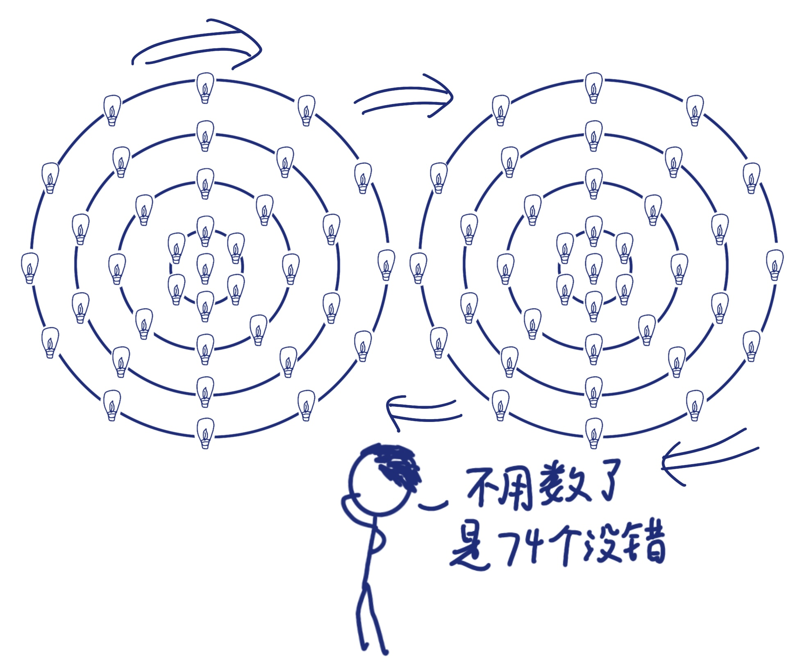
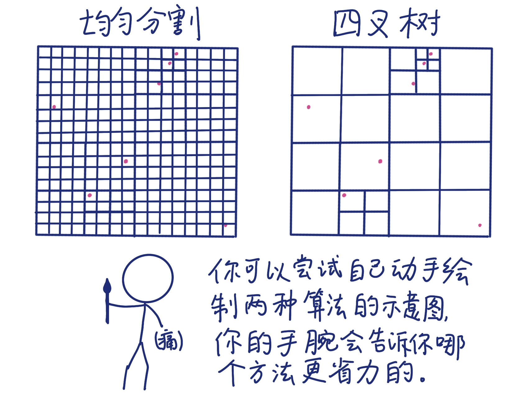

Cosmic Simulation Game
宇宙学模拟-“游戏”攻略
Ruiqi Yang
Dec 24, 2023引言：模拟宇宙？听起来像是一款游戏。你别说，数值模拟专家们确实在玩这款“游戏”，并尝试不断优化，来学习理解我们的宇宙。它的玩法是什么？有什么困难关卡？能不能通关？ 我想，你的大脑早已充满了各种问题。为了让你的“游戏”体验感更好，我特意制作了这份攻略，希望能够帮到你。
起源：什么是宇宙学模拟？
\( E=mc^2 \) when $a \ne 0$, $\frac{\sqrt{2}}{\epsilon}$
在玩宇宙学模拟“游戏”前，我们先来聊聊它是怎么被“开发”出来的。
我们所处的宇宙演化时，涉及到大量复杂的相互作用。描述这些作用的方程组太难求解，计算量极大，物理学家们算不过来（好吧，加上数学家们也不行）。 这让人们不得不求助于数值模拟：它通过将物理方程转化为计算机算法，利用计算速度更快的计算机进行近似求解，帮助我们模拟和追踪复杂的演化过程。 宇宙学模拟就是数值模拟的一个重要分支，主要用于研究一些宇宙现象，如星系的形成与演化等。
说到数值模拟的先行者，就不得不提一位牛人--埃里克·霍姆伯格（Erik Holmberg）。早在电子计算机不发达的1941年， 他就利用数值模拟中N体模拟（N体模拟，是对多个相互作用粒子的系统演化模拟。）思想做了个实验： 根据光强与引力的相似性 （它们都与距离的平方成反比关系），埃里克用74个灯泡模拟两个星系中的恒星分布， 通过仪器测量每个灯泡受到的光强，进而推算出灯泡在未来短时间内的运动距离和方向。 就这样，他一步步地计算每个灯泡的运动情况，一点点地挪动每个灯泡，徒手把这两个模拟星系在近距离交汇下的演化情况推了出来。 最终，他得到的结论是，近距离的两个星系一般会合并成一个更大的星系。而直到大约三十年后，当算力足够的计算机出现时，他的结果才被证实。 可见，埃里克是妥妥的宇宙学模拟“游戏”元老级人物。
随着计算机技术在二十世纪中叶后飞速发展，宇宙学模拟能力逐步得到提升。自二十世纪末以来，出现了许多大规模的数值模拟 （Millennium 模拟、Illustris 模拟、Euclid Flagship 模拟等等），它们的模拟粒子数达到了千亿、甚至万亿量级，远远高于埃里克那个时代的模拟能力。 更高的模拟粒子数量级意味着更高的模拟精度。 模拟精度可以用视频清晰度来类比理解：如果清晰度太低，视频看起来会很模糊，许多信息被藏了起来；相反，高清晰度则允许我们了解更多的视频细节。同样的，高精度模拟有助于宇宙学家们获取更多模拟宇宙的细节， 与实际宇宙的观测数据对比后，可以建立更精确的物理模型。
宇宙学模拟为我们破解宇宙奥秘提供了一条强有力途径。现在，你可以方便地在一台轻薄笔记本里写好程序代码，传输给超级计算机的服务器进行计算。在很可观的时间内，计算机就可以给你反馈模拟结果。这是百年前人们所不具备的科研方式。
玩法：如何进行模拟
了解过宇宙学模拟的历史后，现在我们正式进入玩法介绍，带你体验一次宇宙学模拟“游戏”。
选取宇宙学模型
首先，你要选择一个宇宙学模型。现有的观测数据表明，我们的宇宙是在加速膨胀的，因此需要选择一种宇宙学模型来准确描述这种膨胀。模型有很多种，最为广泛接受的是ΛCDM（Lambda-CDM）模型。 其中，宇宙学常数（Λ）用于描述导致宇宙的加速膨胀的暗能量；冷暗物质（CDM）用于描述被视为低温的、不可碰撞的暗物质（“暗”代表无法通过传统观测手段来直接观测，只能通过它们对周围环境的影响来推测。）。 ΛCDM模型中暗能量占68%，暗物质占27%，其他能被我们直接观测到的物质占5%。许多团队依据该模型得到的模拟结果，已经可以较好地解释大尺度结构的形成、宇宙微波背景辐射等观测现象。
设定初始条件
选好了模型，接下来我们来设置宇宙的初始条件。其中很重要的一条就是密度扰动。暴涨理论认为，宇宙在大爆炸开始时会经历一个膨胀速度极高的暴涨阶段。在该阶段的早期，宇宙存在微小的密度扰动，导致了之后宇宙中物质分布的不均匀性， 形成了现有的各种结构。因此，密度扰动需要被考虑到模拟的初始条件中。当然，你还需要设置暗物质和其他物质的初始位置、速度分布等，这些初始条件都可以根据你的理论模型来进行调整。
按下“运行”键
很好，我们已经设置好了模拟宇宙的基本配置。现在，按下“运行”键，剩下计算过程的交给超级计算机去吧。等计算机反馈给你模拟结果后，通过数据处理，你可以得到模拟宇宙的物理信息。
如果你有印象，其实在文章开始前我已经放了张Illustris模拟团队的结果，里面有对密度、温度等信息的可视化图像，看起来是不是非常的壮观呢？ 不仅仅壮观，许多如Illustris这种大规模宇宙学模拟，已经可以与观测数据非常贴近。 与观测数据比对分析后，可以进一步完善理论模型，增进我们对大尺度结构、星系形成背后物理过程的理解。 不过，如果你的模拟结果不太符合观测，就需要修改模型或者初始条件，重新进行一次游戏了。
装备：解决模拟困难的工具
“感觉没有难度诶，动动手设置条件就好了？”好吧，我料到会有读者这样说，那我就列举下游戏里的两个困难关卡吧：一个是分辨率，一个是准确度。我们不仅要模拟出足够多的细节，还要保证这些细节的演化与真实宇宙高度一致。 光是这两个困难关卡，就足以让几代玩家们前仆后继。为了帮你更从容地应对这两大困难关卡，我来为你介绍两个重要的游戏“装备”。
硬件
高分辨率和高准确度模拟，对高性能计算硬件技术提出了挑战性的需求。 你或许听过一些超级计算机集群的名字：天河一号、天河二号、神威·太湖之光。这些超级计算机集群的计算速度比你自己的笔记本电脑快了接近数万倍， 模拟出来的细节也比你的多得多。同样粒子数的模拟， 在家用台式计算机上需要几千年，它们几个月就能运行出来。
从新型芯片开发，到计算机群搭建，每此硬件的升级，都能让宇宙学模拟达到新高度。所以，要想玩得好，强大的硬件“装备”是必不可少的。
算法
如果说硬件决定了模拟能力上限，那么优化算法就是努力发挥硬件的最大模拟能力。下面，我举个经典的例子来让你体会下优化算法的魅力。
宇宙学模拟中，N体引力作用计算是一个基础性问题。试想一个二维平面，里面分布了一些粒子。 我们模拟关注的重点其实是粒子附近的小区域，而非那些“空”的区域。如果我们把二维模拟区域完全均匀分割， 直到分割单元内粒子数小于等于一，然后再计算粒子间相互作用，就会很费时间。 所以，一种叫做四叉树的方法就被提出。它先将模拟区域四等分，然后判断各个次区域里是否包含了粒子，如果没有，就不再细分，否则再次四等分。 如此反复递归下去，就会形成一种树型的结构。 这种算法合理地划分了模拟空间，避免引入不必要的单元计算，降低了运算复杂度。
宇宙学模拟的粒子数量级如今已达到了万亿量级，未来只会越来越高。针对不同物理场景，优化算法能提高大大模拟效率，缩短模拟时间。
通关：展望宇宙学模拟
“通关了是不是意味着我们可以准确预测未来了呢?”不得不说，这个想法是很好的。如果在未来某天，只需要动动手，设置好参数，就模拟出整个宇宙的未来，那是多么激动人心的时刻，应该被写入《人类群星闪耀时》这本书。 但很抱歉，让你失望的是，通关几乎不可能（你想把“几乎”去掉也没关系）。物理学诺奖得主菲利普·安德森（Philip Anderson）曾言：物理可以被还原，但有可能不能被重构。 我们虽然可以通过各种手段，如观测、模拟，不断地了解物理规律，但是有可能无法从物理规律出发做出大尺度的预测。举一个很简单的例子：你每天看的天气预报，它能给你未来几天温度变化的大致范围，但不能100%准确。 所以，如果你想从模拟专家那里预知明天彩票的中奖号码，还是趁早打消了这个念头吧。
总的来说，宇宙学模拟仍是充满挑战和激动人心的。尽管我们可能永远无法完全模拟宇宙的复杂性，但通过学习宇宙学和进行模拟，我们能够逐步深入了解宇宙的基本结构和演变，推动科学的前沿，并解答一些人类最基本的问题。
攻略到此就要收尾了，如果你对这款“游戏”很感兴趣，欢迎加入数值模拟大家庭，和其他玩家一起在模拟宇宙中继续探索！祝你玩得开心，我们下次再见！
参考文献
- P. W. Anderson. More is different: Broken symmetry and the nature of the hierarchical structure of science. Science, 177(4047):393–396, August 1972. doi: 10.1126/science.177.4047.393.
- Raul E. Angulo and Oliver Hahn. Large-scale dark matter simulations. Living Rev Comput Astrophys, 8(1):1, February 2022. ISSN 2365-0524. doi: 10.1007/s41115-021-00013-z.
- Arianna Borrelli and Janina Wellmann. Computer simulations then and now: An introduction and historical reassessment. N.T.M., 27(4):407–417, December 2019. ISSN 0036-6978, 1420-9144. doi: 10.1007/s00048-019-00227-6.
- Yin Li, Yueying Ni, Rupert A. C. Croft, Tiziana Di Matteo, Simeon Bird, and Yu Feng. Ai-assisted superresolution cosmological simulations. Proceedings of the National Academy of Sciences, 118(19):e2022038118, May 2021. doi: 10.1073/pnas.2022038118.
- Mark Vogelsberger, Federico Marinacci, Paul Torrey, and Ewald Puchwein. Cosmological simulations of galaxy formation. Nat Rev Phys, 2(1):42–66, January 2020. ISSN 2522-5820. doi: 10.1038/s42254-019-0127-2.